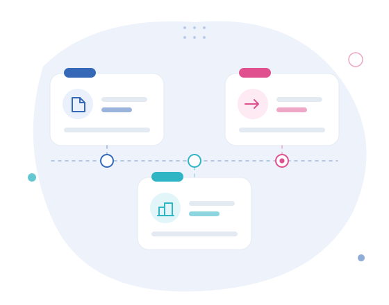

Activity begins
Preparation and monitoring of investment projects for businesses.
04 · About us
The activity that gave rise to Clave de Números began in 2011 through work with business investment projects. The company was incorporated in 2013 and grew largely through recommendations, maintaining long-standing relationships with clients in Montijo and elsewhere in Portugal.

Isabel Monteiro's professional path began with investment projects for micro and small companies. Continued contact with those clients showed that many business decisions required regular support and organised accounting information.
The activity initially operated as a sole-trader business. In 2013, as the work grew, Clave de Números — Consultoria e Gestão Unipessoal Lda was incorporated.
The company has grown steadily, mainly through word of mouth. Its family dimension contributes to stability, accumulated knowledge of clients and continuity without compromising professional rigour.
Processes have become more digital, allowing remote support and reducing the need for travel while preserving direct responsibility towards each client.
Preparation and monitoring of investment projects for businesses.
Clave de Números — Consultoria e Gestão Unipessoal Lda is created.
Clients' need for continuous support leads to expanded accounting and tax services.
Four professionals support clients in Montijo and across Portugal.
Experience with business projects gave Isabel Monteiro direct insight into the challenges faced by micro and small companies: investment decisions, financial organisation, compliance and the need for understandable information.
Her Management degree shapes the way Clave approaches accounting. Compliance is essential, but information should also help clients understand the activity and prepare decisions.
Rigour, closeness and responsibility only matter when they translate into observable behaviour.
Checking documentation, identifying missing information and applying the correct framework.
Explaining deadlines, amounts and decisions without assuming accounting knowledge.
Considering the history of the activity rather than treating each question in isolation.
Recognising what falls within accounting and what requires legal or other specialist advice.
Maintaining clear communication channels and providing useful information.
Using digital processes to improve efficiency without losing human contact.
Documentation, obligations and technical questions are coordinated within the team while the history of each activity remains integrated.
Channels, documents and relevant dates are organised from the beginning.
Tasks are directed to the people responsible for accounting, tax, payroll or administration.
The team works from the same information and considers how the activity has evolved.
Digital processes allow documents to be received and clients outside Montijo to be supported by identifiable team members.
Clave de Números is a team of four professionals. Responsibilities are distributed without fragmenting the relationship with the client.
A Management graduate from the University of Évora, she began her career with investment projects and supports companies and entrepreneurs with particular attention to rigour, closeness and interpretation of accounting and tax information.
Working in the field since 2020, she coordinates operations, supports company clients and connects their accounting and tax processes.
With around fifteen years of experience, she mainly supports sole traders and freelancers, including process organisation, IRS and associated documentation.
She manages documents, day-to-day administrative work and the organisation of communications and required information.
The team works from the same documentary history and coordinates different areas whenever a situation requires more than one intervention.
Required information is requested in a structured way.
Obligations covered by the engagement are communicated in useful time.
Accounting and tax matters are explained clearly.
Documents and information are treated responsibly.
It is made clear what depends on the team and what must be provided or decided by the client.
When a matter requires legal or other specialist expertise, this is identified clearly.
All testimonials are presented in full and with the same visual hierarchy.
1–3 of 6
We are based in Montijo and support clients elsewhere in Portugal through digital processes and regular communication with the team.
Get in touch